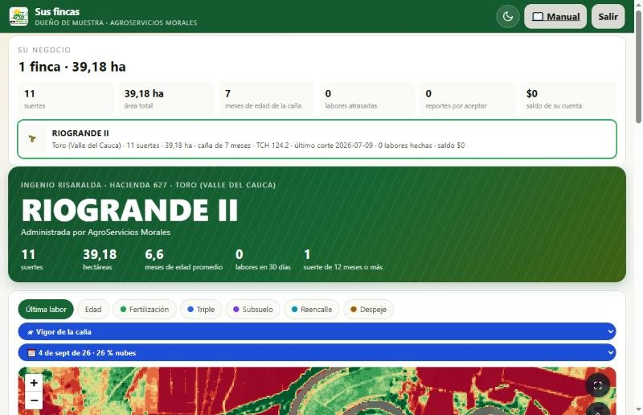
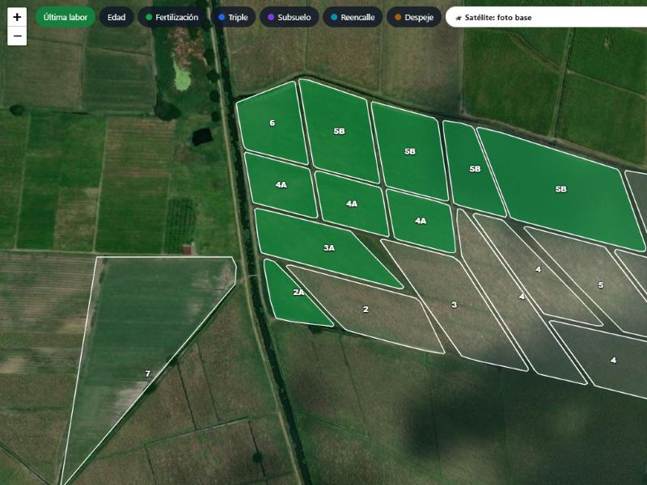
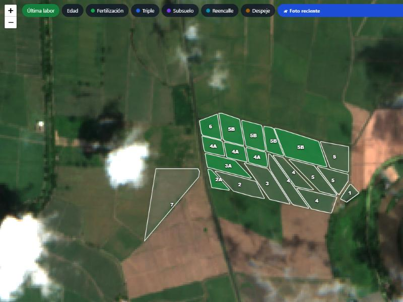
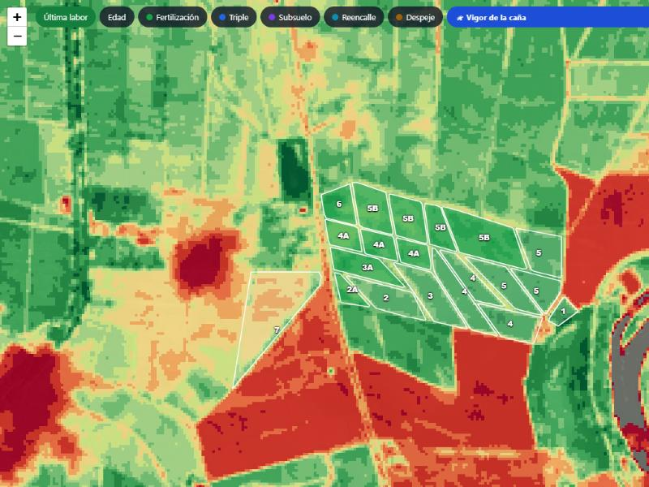
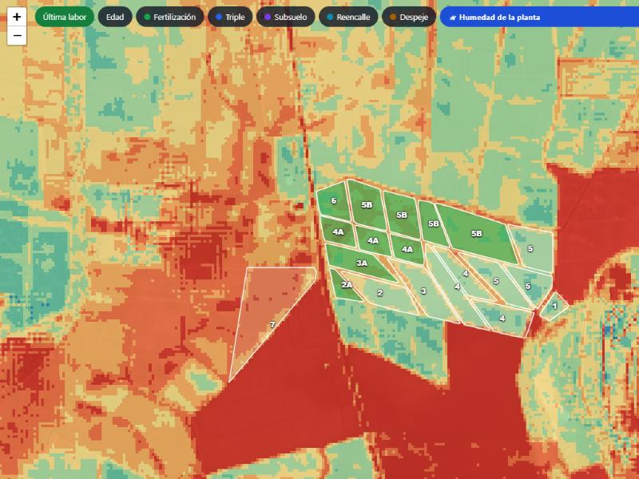
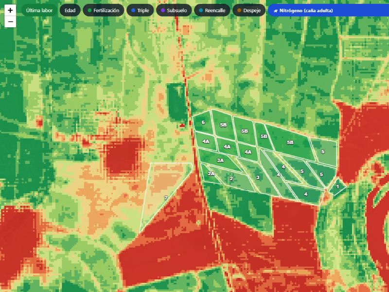
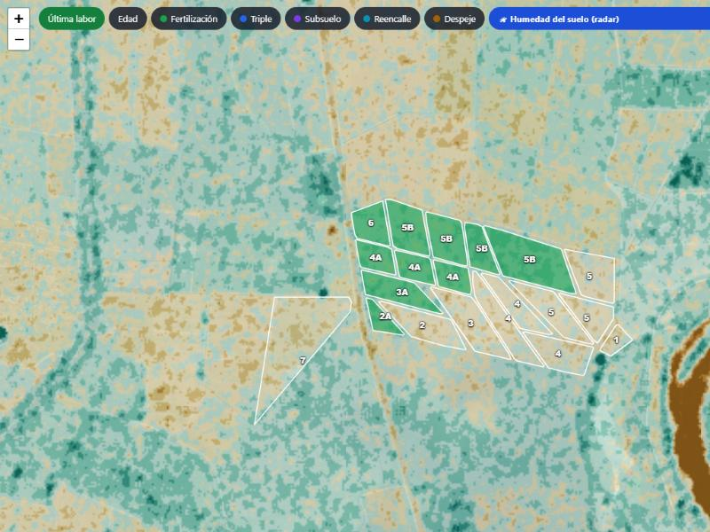
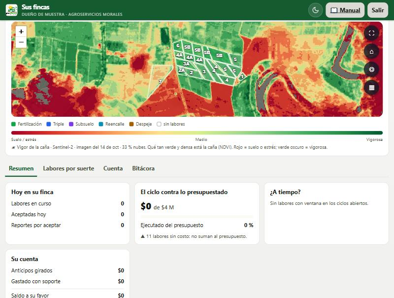
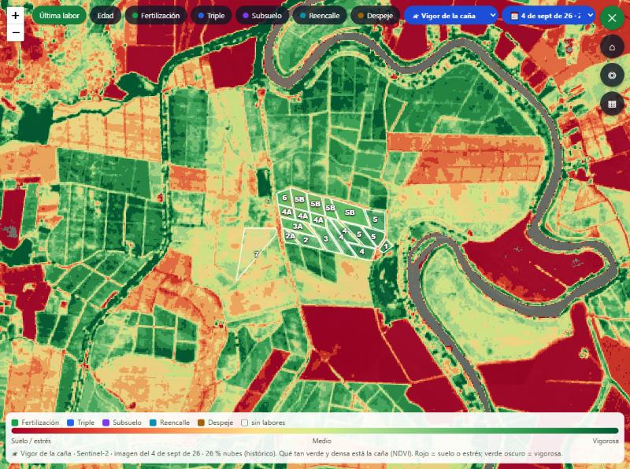

AgroMorales · Guía
Qué muestra cada capa del mapa y cómo leerla — para el dueño de la tierra y para administración
Las imágenes vienen de los satélites Sentinel de la Agencia Espacial Europea: pasan sobre el Valle cada pocos días y ven la caña con un detalle de 10 metros. La app junta lo mejor de los últimos 30 días, sin nubes.
Las capturas son de RIOGRANDE II (Toro), tal como las ve su dueño, el 18 de octubre de 2026.
El dueño entra con su usuario y su PIN. Arriba ve el resumen de su negocio y, más abajo, el mapa de su finca. Encima del mapa está el selector 🛰 para escoger la capa y, cuando hay una escogida, el selector 📅 para ver otra fecha. El botón ⛶ pone el mapa en pantalla completa.

Cada suerte se dibuja con su número. El color dice lo último que se le hizo (verde = fertilización, azul = triple, morado = subsuelo…). Tocando una suerte sale su ficha: edad, labores y fotos.

La foto real tomada por el satélite en los últimos 30 días. Sirve para ver lo que cambió hace poco: el avance de la cosecha, una quema, un lote encharcado. Si quedó alguna nube, se ve blanca.

Qué tan verde y tupida está la caña. Es la capa para comparar suertes entre sí: la que sale más pálida que sus vecinas, del mismo corte, es la que hay que ir a ver.

Cuánta agua tiene la caña. Baja antes que el vigor: por eso sirve de semáforo de riego. Una suerte roja aquí y amarilla en el vigor está pidiendo agua.

En caña grande el vigor ya sale «todo verde» y no distingue. Esta capa mira el nitrógeno de la hoja y orienta la fertilización: lo que sale en rojo o naranja dentro de la finca tiene menos.

El radar atraviesa las nubes, así que sirve en temporada de lluvias, cuando la foto sale tapada. Muestra si el suelo está seco o húmedo y suele ser la imagen más fresca.

Debajo del mapa la leyenda dice de qué día es la imagen y cuántas nubes tenía. Con el selector 📅 se escoge cualquier día claro del último año (en RIOGRANDE II hay 28) y se compara: ¿la suerte que hoy sale pálida ya estaba así hace un mes, o es algo nuevo?


Para comparar rápido: deje la misma capa y vaya cambiando solo la fecha. Lo que se mantiene igual es el terreno; lo que cambia es la caña.
| Ojo con | Por qué |
|---|---|
| Nubes | En la foto y en las capas de la planta, una nube tapa. Si la imagen reciente tiene muchas, use el radar o una fecha anterior más clara. |
| El detalle es de 10 metros | Ve la suerte y sus manchas, no la mata una por una. Para el detalle, la foto de la labor que trae cada reporte. |
| Comparar suertes de distinta edad | Una caña recién cortada siempre sale con menos vigor que una de 10 meses. Compare suertes de edad parecida, o la misma suerte en fechas distintas. |
| Decidir solo con la imagen | La imagen dice dónde mirar. Lo que hay que hacer lo confirma la visita de campo. |
Sin señal: el mapa de la finca con su foto base sí se ve (queda guardado en el celular), pero las capas del satélite —vigor, humedad, nitrógeno, radar— y el histórico necesitan internet.